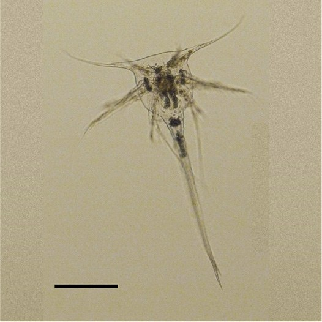
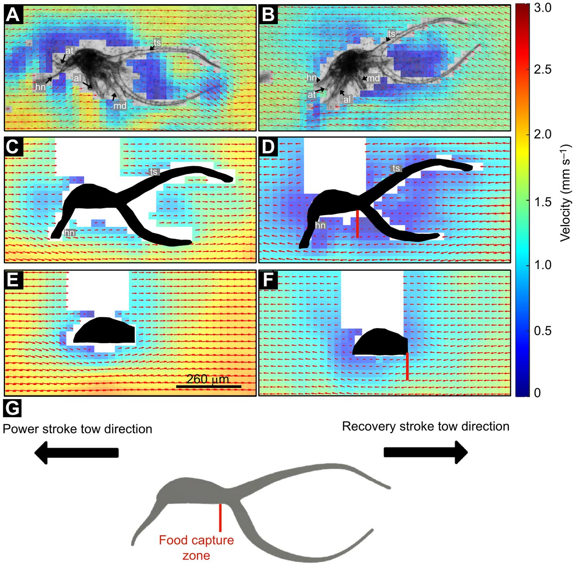

Research entry 02
Zooplankton: Small bodies in thick water
Zooplankton are animals that drift in the water column, from lifelong drifters like copepods to the larvae of barnacles, crabs, and sea urchins. They link the ocean's microscopic algae to fish and whales, and many are smaller than a millimeter.
At that size, water behaves differently. Viscosity (the stickiness of a fluid) matters as much as momentum, so a larva cannot coast the way a fish does, and every spine or bristle changes how water moves around it. I study how the shape of these animals sets how well they swim and feed.

Lepas anserifera, scale bar 200 µm. Ballentine et al. 2026, Journal of Experimental Biology
Horns and tails
p. 002-FQ: Why do some larvae carry such long spines?
Many zooplankton have long spines, and the larvae (nauplii) of the gooseneck barnacle Lepas anserifera have some of the longest relative to their bodies: two frontal horns and a forked tail spine. Spines can make a larva too big for small predators to swallow, but their effects on swimming and feeding were largely unknown.
Live nauplii are too small and delicate to measure forces on directly, so we built 3D-printed models a few centimeters long and towed them through corn syrup nearly 5,000 times more viscous than water. Matching size, speed, and viscosity this way recreates the flow a real nauplius experiences. We tested five versions of the model (intact, horns only, tail only, no spines, and one horn missing), measured the forces and torques on each, and mapped the flow around them with lasers and tracer particles (particle image velocimetry). This was a collaboration between Karen Chan's lab at the University of Washington and Mimi Koehl's lab at UC Berkeley.

Ballentine et al. 2026, Journal of Experimental Biology
Spines are a trade-off. Horns and tail both increase drag, making each stroke of the swimming appendages less effective. But they also act as stabilizers, resisting the nose-up and nose-down rocking caused by those beating appendages. A model missing one horn was pushed sideways and turned with every stroke, so a nauplius that loses a horn to a predator should veer off course.
Spines also slow the water passing through the feeding zone. The intact model let through about a quarter as much water as the spineless one, giving a nauplius more time to strain food from each parcel of water. Long spines appear to favor feeding over fast swimming, a trade-off that may explain why feeding larvae tend to have longer spines than non-feeding ones.

Ballentine et al. 2026, Journal of Experimental Biology
Read more
the paper behind this page- 2026Ballentine W.M., Chan K.Y.K., Wong E., Wong J.Y., Koehl M.A.R. Hydrodynamic effects of spines on zooplankton: how horns and tails alter flow and forces on barnacle nauplii. Journal of Experimental Biology 229: jeb252318. doi:10.1242/jeb.252318